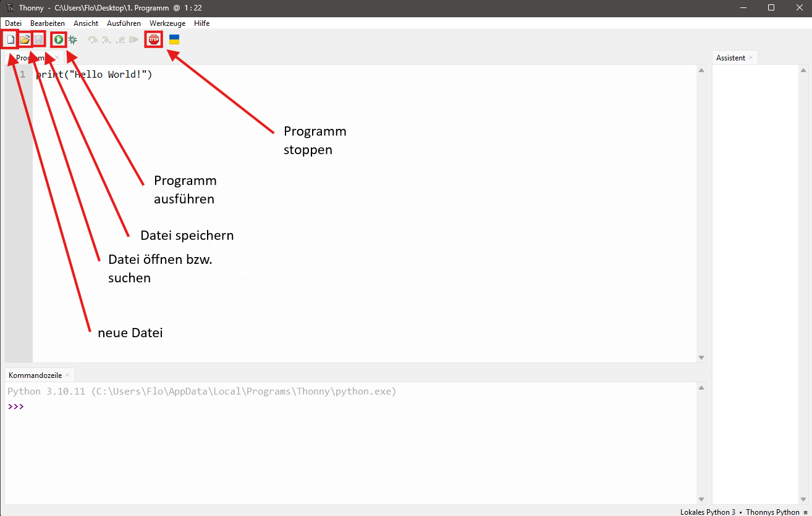
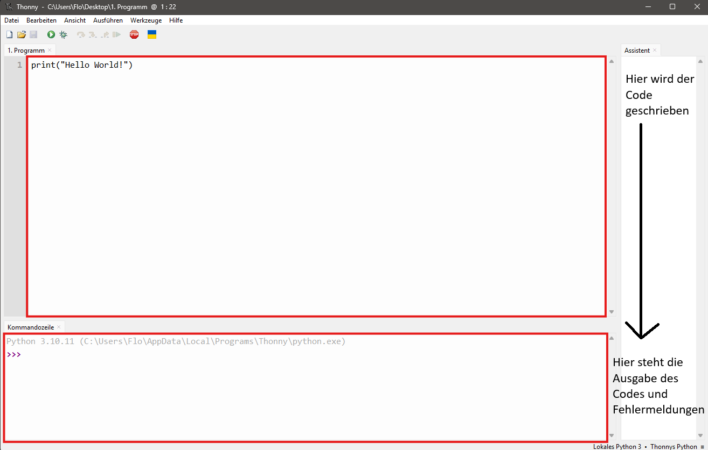

In Thonny schreibt man Python-Code, speichert Programme und startet sie.
Das Bild zeigt die wichtigsten Bereiche von Thonny. Damit können Schülerinnen und Schüler die Oberfläche schneller einordnen.

In der Shell erscheinen Ausgaben des Programms. Später sieht man dort auch Eingaben und Fehlermeldungen.

images liegen und die Dateinamen genau eins.png und zwei.png heißen.
print()
Mit print() gibt Python etwas in der Shell aus. Das kann zum Beispiel ein Wort, ein Satz oder später auch der Inhalt einer Variable sein.
print ist der Name des Befehls.print() ist eine Funktion. Für den Anfang reicht aber die einfache Erklärung: Es ist ein Python-Befehl, mit dem man etwas ausgeben kann.
Eine Variable ist ein Name für einen gespeicherten Wert. Man kann sich eine Variable wie eine beschriftete Box vorstellen.
Hier wird der Text "Lena" in der Variablen name gespeichert. Danach wird der Inhalt ausgegeben.
Variablen können unterschiedliche Arten von Werten speichern. Für den Einstieg reichen diese drei Arten.
| Art des Werts | Woran erkennt man ihn? | Beispiel | Wichtig zu beachten |
|---|---|---|---|
| String Text |
steht in Anführungszeichen | "Hallo" |
Ohne Anführungszeichen ist es kein Text. |
| Integer ganze Zahl |
ohne Anführungszeichen | 15 |
Keine Nachkommastellen. |
| Float Kommazahl |
mit Punkt statt Komma | 3.5 |
In Python schreibt man 3.5 und nicht 3,5. |
print(Hallo) ist falsch.print("Hallo" ist falsch.3,5 ist nicht dasselbe wie 3.5.Print() ist nicht dasselbe wie print().input(), Rechnen mit Variablen, Bedingungen oder Schleifen.